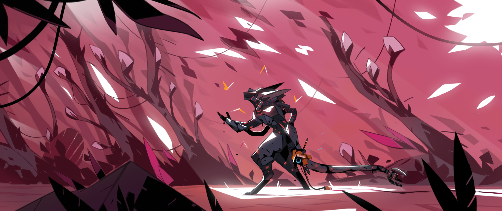

<!-- Plantas Destacadas -->
<h1 class="font-bold text-4xl text-center py-4">Plantas destacadas</h1>
<div class="flex-auto relative shadow-md overflow-hidden rounded-lg h-96 bg-red-50">
    
    <!-- Planta 1 con Imagen 1 -->
    <div class="slide-image absolute inset-0 object-cover w-full h-full opacity-0 transition-opacity duration-[600ms] ease-in-out" data-te-carousel-fade data-te-carousel-item data-te-carousel-active>
        
        <div class="absolute inset-0 flex items-end justify-center pb-4">
            <span class="text-white text-xl bg-black bg-opacity-60 px-3 py-1 rounded">Planta 1</span>
        </div>
    </div>
    
    <!-- Planta 2 con Imagen 2 -->
    <div class="slide-image absolute inset-0 object-cover w-full h-full opacity-0 transition-opacity duration-[600ms] ease-in-out" data-te-carousel-fade data-te-carousel-item>
        
        <div class="absolute inset-0 flex items-end justify-center pb-4">
            <span class="text-white text-xl bg-black bg-opacity-60 px-3 py-1 rounded">Planta 2</span>
        </div>
    </div>
    
    <!-- Planta 3 con Imagen 3 -->
    <div class="slide-image absolute inset-0 object-cover w-full h-full opacity-0 transition-opacity duration-[600ms] ease-in-out" data-te-carousel-fade data-te-carousel-item>
        
        <div class="absolute inset-0 flex items-end justify-center pb-4">
            <span class="text-white text-xl bg-black bg-opacity-60 px-3 py-1 rounded">Planta 3</span>
        </div>
    </div>

    <!-- Indicators -->
    <div id="slider-bars" class="absolute bottom-4 left-1/2 transform -translate-x-1/2 space-x-2 flex z-20" data-te-carousel-indicators>
        <button class="bg-green-500 bg-opacity-90 w-4 h-1 rounded cursor-pointer shadow-style" data-te-target="#slider" data-te-slide-to="0" aria-label="Slide 1"></button>
        <button class="bg-green-500 bg-opacity-90 w-4 h-1 rounded cursor-pointer shadow-style" data-te-target="#slider" data-te-slide-to="1" aria-label="Slide 2"></button>
        <button class="bg-green-500 bg-opacity-90 w-4 h-1 rounded cursor-pointer shadow-style" data-te-target="#slider" data-te-slide-to="2" aria-label="Slide 3"></button>
    </div>
    
    <!-- Prev and Next Buttons -->
    <button id="prev-button" class="shadow-lg absolute top-1/2 left-4 bg-white bg-opacity-90 rounded-full p-2 z-20" data-te-target="#slider" data-te-slide="prev">
        <span class="text-green-500">←</span>
    </button>
    <button id="next-button" class="shadow-lg absolute top-1/2 right-4 bg-white bg-opacity-90 rounded-full p-2 z-20" data-te-target="#slider" data-te-slide="next">
        <span class="text-green-500">→</span>
    </button>
</div>